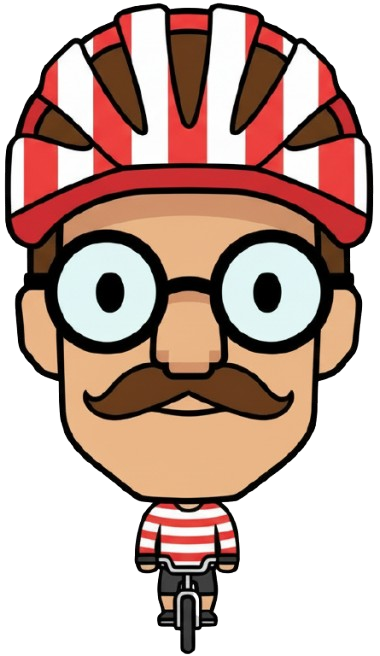

Informazioni su questa mappa
Questa mappa mostra il percorso in bici attraverso Eurasia usando OpenStreetMap come base, una traccia aggiornata periodicamente e i punti di fine tappa calcolati dai dati GPS.
Le statistiche (giorni in bici, chilometri totali, dislivello, velocità media) vengono generate da uno script che elabora i file registrati sul campo e produce un GeoJSON per la traccia, un riepilogo giornaliero e un elenco di foto geotaggate.
Il codice sorgente di questo progetto è disponibile su GitHub, insieme agli script che preparano i dati e al workflow usato per aggiornare la mappa in automatico.